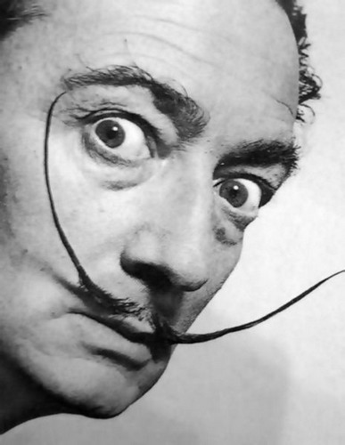
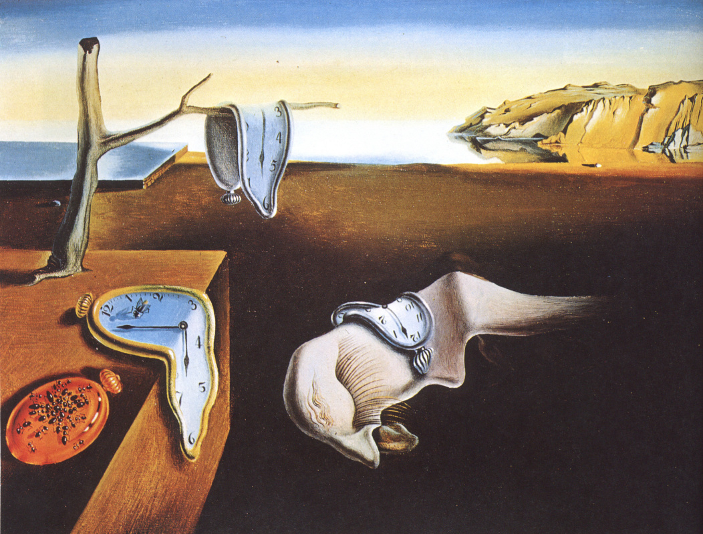
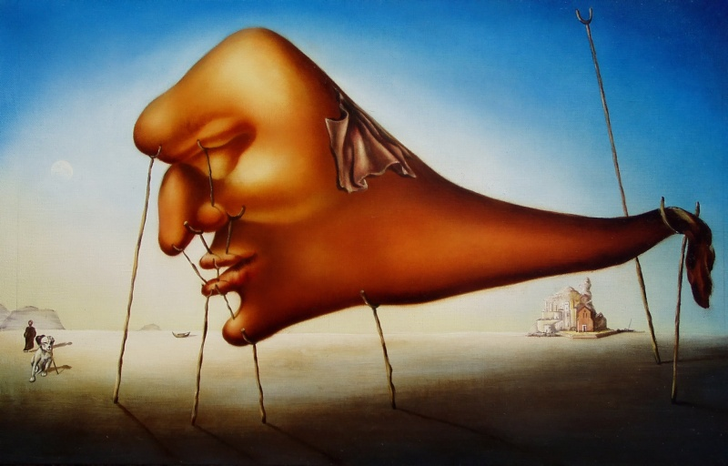

Сальвадор Далі народився 11 травня 1904 року в родині нотаріуса Сальвадора Далі-і-Кусі (1872—1952) і Феліпи Доменеч (1874—1921) у містечку Фігерасі в Каталонії, на північному сході Королівства Іспанія. Він народився через
дев'ять місяців після смерті свого брата якого звали Сальвадор
Талант Сальвадора до малювання з'явився у досить юному віці. Уже в чотирирічному віці він, з дивною для такої маленької дитини старанністю, намагався малювати. Першу свою картину Сальвадор Далі
намалював, коли йому було шість років. Це був невеликий імпресіоністський пейзаж
Особисте життя Сальвадора Далі до 1929 року не мало яскравих моментів
На початку 30-х років Сальвадор Далі вступив у конфлікт із сюрреалістами на політичному підґрунті


Постійння память
Coн
Сон- Далі зобразив велику і м'яку голову з відсутнім тілом. Тому, хто, який уособлює сон, необхідно безліч підпірок, які підтримують голову і зберігають риси обличчя. Підпірки говорять про крихкість реальності, - навіть собаці, намальованої в лівому нижньому кутку картини, необхідна підпора, щоб не впасти на землю. Блакитний колір картини підсилює відособленість від раціонального світу
Головна сторінка